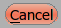
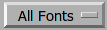
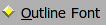
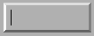
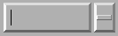
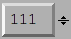
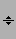
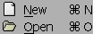

X Resources
Every X application has an inordinate number of resources that you can tweak. This one is no exception. However I don't follow standard conventions, so it's all different. Sorry (a little anyway).
To use an X resource add a series of lines to your .Xdefaults file and then run "$ xrdb ~/.Xdefaults". For example:
Gdraw.ScreenWidthInches: 14.7 Gdraw.GGadget.Popup.Font: 10pt helvetica Gdraw.Background: white fontforge.FontView.FontFamily: Helvetica, GillSans
Some systems (the mac) will not automatically load X resources when starting X, in this case you must explicitly tell fontforge where to find a resource file with the preference item: File->Preference->Generic->ResourceFile.
You may also use fontforge's resource editor (File->X Resource Editor)
If a resource begins with "Gdraw." or "fontforge."
then the program will look at it.
-
fontforge.FontView.ChangedColor - Sets the color used to mark changed glyphs.
-
fontforge.FontView.GlyphInfoColor - Sets the color used to dislpay information about selected glyph, betwen the FontView menu bar and the glyph array.
-
fontforge.FontView.SelectedColor - Sets the background color of selected glyphs.
-
fontforge.FontView.SelectedFgColor - Sets the foreground color of selected glyphs.
-
fontforge.FontView.EmptySlotFgColor - Sets the color of crosses marking empty code points.
-
fontforge.FontView.HintingNeededColor - Sets the color of markings for glyphs that need hinting or instructing.
-
fontforge.FontView.FontSize - Point size of those fonts.
-
fontforge.CharView.InfoFamily - A list of font family names to be used in the outline and bitmap character views for information messages.
-
fontforge.CharView.PointColor - Sets the color used to draw curved, corner or tangent points in the outline character view.
-
fontforge.CharView.FirstPointColor - Sets the color of the first point on a contour.
-
fontforge.CharView.SelectedPointColor - Sets the color used to draw selected curved, corner or tangent points in the outline character view.
-
fontforge.CharView.SelectedPointWidth - Sets the width of the line used to outline selected curved, corner or tangent points in the outline character view.
-
fontforge.CharView.ExtremePointColor - Sets the color of a point which is an extremum.
-
fontforge.CharView.PointOfInflectionColor - Sets the color of a location which is a point of inflection.
-
fontforge.CharView.AlmostHVColor - Sets the color used to mark lines and curves which are almost, but not quite horizontal or vertical.
-
fontforge.CharView.NextCPColor - Sets the color used to draw the "Next" control point.
-
fontforge.CharView.PrevCPColor - Sets the color used to draw the "Previous" control point.
-
fontforge.CharView.SelectedCPColor - Sets the color used to draw a control point that has been selected.
-
fontforge.CharView.CoordinateLineColor - Sets the color used to draw the coordinate axes.
-
fontforge.CharView.WidthColor - Sets the color used to draw the advance width line.
-
fontforge.CharView.WidthSelColor - Sets the color used to draw the advance width if it is selected.
-
fontforge.CharView.GridFitWidthColor -
Sets the color used to draw the advance width once it has been grid fit (if
View->Show Grid Fitis on) -
fontforge.CharView.LigatureCaretColor - Sets the color used to draw ligature caret lines.
-
fontforge.CharView.RasterColor -
Sets the color used to draw the pixels of a rasterized bitmap (if
View->Show Grid FitorHints->Debugis on) -
fontforge.CharView.RasterNewColor -
Sets the color used to draw the pixels of a rasterized bitmap if they have
recently been turned on (if
Hints->Debugis on) -
fontforge.CharView.RasterOldColor -
Sets the color used to draw the pixels of a rasterized bitmap f they have
recently been turned off (if
Hints->Debugis on) -
fontforge.CharView.RasterGridColor -
Sets the color used to draw the pixel grid used by the rasterizer (if
View->Show Grid FitorHints->Debugis on) -
fontforge.CharView.RasterDarkColor - When doing anti-aliased debugging, sets the color used for the darkest pixel. Other pixels will be interpolated between this and the background.
-
fontforge.CharView.ItalicCoordColor - Sets the color used to draw various horizontal metrics lines when they have been skewed appropriately for an italic font.
-
fontforge.CharView.MetricsLabelColor - Sets the color used to label metrics lines
-
fontforge.CharView.HintLabelColor - Sets the color used to label hint lines (and blue value lines)
-
fontforge.CharView.BlueValuesStippledCol - Sets the color used to draw the BlueValues and OtherBlues zones.
-
fontforge.CharView.FamilyBlueStippledColor - Sets the color used to draw the FamilyBlueValues and FamilyOtherBlues zones.
-
fontforge.CharView.MDHintColor - Sets the color used to draw minimum distance hints
-
fontforge.CharView.DHintColor - Sets the color used to draw diagonal hints
-
fontforge.CharView.HHintColor - Sets the color used to draw horizontal stem hints
-
fontforge.CharView.VHintColor - Sets the color used to draw vertical stem hints
-
fontforge.CharView.ConflictHintColor - Sets the color used to draw hints when they conflict
-
fontforge.CharView.HHintActiveColor - Sets the color used to draw a horizontal stem hint when it is active in the review hints dlg.
-
fontforge.CharView.VHintActiveColor - Sets the color used to draw a vertical stem hint when it is active in the review hints dlg.
-
fontforge.CharView.HFlexHintColor - Sets the color used to draw the halo around horizontal flex hints
-
fontforge.CharView.VFlexHintColor - Sets the color used to draw the halo around vertical flex hints.
-
fontforge.CharView.AnchorColor - Sets the color used to draw an anchor point
-
fontforge.CharView.TemplateOutlineColor - Sets the color used to draw a template outline. (not currently used)
-
fontforge.CharView.OldOutlineColor - Sets the color used to draw the original outline of a set of splines being transformed with one of the transform tools (flip, rotate, scale, etc.)
-
fontforge.CharView.TransformOriginColor - Sets the color used to draw the origin of the current transformation.
-
fontforge.CharView.GuideOutlineColor - Sets the color used to draw outlines in the Guide layer.
-
fontforge.CharView.GridFitOutlineColor - Sets the color used to draw outlines which have been gridfit (this should probably be the same as BackgroundOutlineColor as both are in the background layer).
-
fontforge.CharView.BackgroundOutlineColor - Sets the color used to draw background outlines.
-
fontforge.CharView.ForegroundOutlineColor - Sets the color used to draw foreground outlines.
-
fontforge.CharView.BackgroundImageColor - Sets the color used to draw background images.
-
fontforge.CharView.FillColor - Sets the color used to draw a character's fill
-
fontforge.CharView.PreviewFillColor - The color to use when performing a preview fill. If this is not set then FontForge will fallback to using fontforge.CharView.FillColor. Neither of these resources are set then black will be used.
-
fontforge.CharView.TraceColor - Sets the color used to draw the trace of the freehand tool.
-
fontforge.CharView.Rulers.FontSize - Sets the point size of the font used in the rulers and the info bar. If the font is too big text will be clipped.
-
fontforge.CharView.Measure.Font - Select the font used to display the information shown in the window associated with the measure tool.
-
fontforge.DebugView.Font - Select the font used to display the truetype instructions being debugged.
-
fontforge.DVRaster.Background - Sets the background color of the raster window in the debugger.
-
fontforge.MetricsView.AdvanceWidthColor - Sets the color for the grid lines in the metrics view when nothing special is happening to them.
-
fontforge.MetricsView.ItalicAdvanceColor - In an italic font, this will be the color used to draw the line at the italicAngle which corresponds to the italic advance width.
-
fontforge.MetricsView.KernLineColor - Sets the color for the grid line in the metrics view which currently may be moved to change a glyph's kerning.
-
fontforge.MetricsView.SideBearingLneColor - Sets the color for the grid line in the metrics view which currently may be moved to change a glyph's right side bearing (or bottom side bearing).
-
fontforge.MetricsView.SelectedGlyphColor - Sets the color for the currently selected glyph in the metrics view.
-
fontforge.MetricsView.Font - Select the font used to display labels in the metrics view.
-
fontforge.BDFProperties.Font - Sets the font used in the BDF Properties dialog for stand alone text
-
fontforge.Combinations.Font - Sets the font used in the kern and anchor combinations dialog for labelling the combinations
-
fontforge.CVT.Font - Sets the font used in the 'cvt ' table dialog
-
fontforge.GlyphInfo.Font - Sets the font used in the glyph info dialog for stand alone text
-
fontforge.Groups.Font - Sets the font used in the Groups dialog
-
fontforge.Histogram.Font - Sets the font used in the Histogram dialog
-
fontforge.KernClass.Font - Sets the font used in the kern class and pair dialogs
-
fontforge.LayersPalette.Font - Sets the font used in the layers palettes dialog
-
fontforge.Math.Font - Sets the font used in the Math dialog
-
fontforge.Math.BoldFont - Sets the bold font used in the Math dialog
-
fontforge.OFLib.Font - Sets the font used in the Open Font Library browser dialog
-
fontforge.SearchView.Font - Sets the font used in the find and replace dialog
-
fontforge.SearchView.BoldFont - Sets the bold font used in the find and replace dialog
-
fontforge.SFTextArea.Font - Sets the font used in the Print dialog and its variants dialog -- except I don't think this ever gets used.
-
fontforge.ShowATT.Font - Sets the font used in the Show ATT dialog
-
fontforge.ShowATT.MonoFont - Sets the monospaced font used in the Show ATT dialog
-
fontforge.Splash.Font - Sets the font used in the splash screen and About FontForge dialog.
-
fontforge.Splash.ItalicFont - Sets the italic font used in the About FontForge dialog
-
fontforge.StateMachine.Font - Sets the font used in the Apple state machine dialog
-
fontforge.TilePath.Font - Sets the font used in the Tile Path dialog
-
fontforge.TilePath.BoldFont - Sets the bold font used in the Tile Path dialog
-
fontforge.ToolsPalette.Font - Sets the font used in the Tools Palette dialog for labelling tool options
-
fontforge.TTInstruction.Font - Sets the font used in the various dialogs which edit truetype instructions ('fpgm' table, glyph instructions, etc.)
-
fontforge.Validate.Font - Sets the font used in the Validate dialog
-
fontforge.View.Background - Sets the background color for the drawing areas of the fontview, glyph view, bitmap view and metrics view.
-
fontforge.Warnings.Font - Sets the font used in the Warnings dialog
-
Gdraw.ScreenWidthCentimeters -
A double. (centimeters)
X usually does not know the physical width of a screen (it knows the logical, pixel width). Gdraw's internals are based on points rather than pixels, and it will sometimes pick a font that is too small or too large if it relies on X's idea of how wide the screen is. -
Gdraw.ScreenWidthInches -
A double. (inches)
Same as the above, except measured in inches. -
Gdraw.ScreenWidthPixels -
An integer (pixels)
When X creates a virtual screen it may not be possible for Gdraw to find the actual number of pixels on the screen. This again will throw off point calculations. -
Gdraw.ScreenHeightPixels -
An integer (pixels)
When X creates a virtual screen it may not be possible for Gdraw to find the actual number of pixels on the screen. This is not used in point calculations. -
Gdraw.Depth -
An integer (1, 8, 16, 32)
You can use this to request a different depth than the default one. Not all servers will support all depths. If FontForge can't find a visual with the desired depth it will use the default depth. -
Gdraw.VisualClass -
A string ("StaticGray", "GrayScale", "StaticColor", "PsuedoColor", "TrueColor",
"DirectColor")
FontForge will search for a visual with the given class (and possibly depth if the depth argument is specified too). -
Gdraw.Colormap -
An string ("Current", "Copy", "Private")
You can use this to control what FontForge does about the colormap on an 8bit screen- Current -- FontForge will attempt to allocate its colors in the current colormap.
- Copy -- FontForge will allocate what colors it can and then copy the current color map into a private copy. This means FontForge has access to a much wider range of colors, and (as long as the shared colormap doesn't change) FontForge's colormap will match that of the rest of the screen.
- Private -- FontForge will allocate a private colormap and set the colors just as it wants them. It will almost certainly not match the shared colormap.
-
Gdraw.DoDithering -
An integer (0 or 1)
You can use this to turn off dithering of images on an 8bit screen. -
Gdraw.MultiClickTime -
An integer (milliseconds)
The maximum amount of time allowed between two clicks for them to be considered a double (triple, etc.) click. -
Gdraw.MultiClickWiggle -
An integer (pixels)
The maximum number of pixels the mouse is allowed to move between two clicks and have them still be considered a double click. -
Gdraw.TwoButtonFixup -
A boolean
On a windows keyboard use the modifier key with the flag on it to simulate mouse button 2 (middle button). If this key is depressed when a mouse button is pressed or released then pretend it was button 2 that was pressed or release. -
Gdraw.DontOpenXDevices -
a boolean
- Various people have complained that when FontForge attempts to open the devices of the wacom graphics tablet, the X server gives a BadDevice error. I can't duplicate this, the open works fine on my system, but this resource allows them to tell fontforge not to try to use the tablet.
-
Gdraw.MacOSXCmd -
A boolean
On Mac OS X the user will probably expect to use the Command (apple, cloverleaf) key to control the menu (rather than the Control key). If this is set then the command key will be mapped to the control key internally. -
Gdraw.MultiClickWiggle -
An integer (pixels)
The maximum number of pixels the mouse is allowed to move between two clicks and have them still be considered a double click. -
Gdraw.Keyboard -
ibm | mac | sun | ppc | 0 | 1 | 2 | 3
Allows you to specify the type of keyboard. Currently this is only relevent when generating menus. The modifier keys are in different locations on different keyboards (under different operating systems) and if FontForge knows what keyboard you are using it can make the hot-keys have better labels.-
ibm | 0
Uses the Control and Alt keys -
mac | 1
Uses the Command and Option keys (Mac OS/X, Mac keyboard) -
ppc | 3
Uses the Control and Command keys (Suse ppc linux, Mac keyboard) -
sun | 2
Uses the Control and Meta keys
-
ibm | 0
-
Gdraw.SelectionNotifyTimeout -
An integer (seconds)
Gdraw will wait this many seconds after making a request for a selection (ie. when doing a Paste). If it gets no responce after that period it reports a failure. -
Gdraw.Background -
A color
Gdraw will use this as the default background color for the windows. -
Gdraw.Foreground -
A color
Gdraw will use this as the default foreground color for dialogs. -
Gdraw.GGadget.Popup.Foreground -
A color
Specifies the foreground color of popup (tooltip) messages. -
Gdraw.GGadget.Popup.Background -
A color
Specifies the background color of popup messages. -
Gdraw.GGadget.Popup.Delay -
An integer (milliseconds).
Specifies the amount of time the cursor must remain motionless before a popup message pops up. -
Gdraw.GGadget.Popup.LifeTime -
An integer (milliseconds).
Specifies the length of time the message will display. -
Gdraw.GGadget.Popup.Font -
A font
Specifies the font to use in a popup message. -
Gdraw.GGadget.Progress.FillCol -
A color
Specifies the color of the progress bar in the progress window. -
Gdraw.GGadget.Progress.Background -
A color
Specifies the background color of progress window. -
Gdraw.GGadget.Progress.Font -
A font
Specifies the font to use in a progress window. -
Gdraw.GGadget.ImagePath -
A unix style path string, with directories separated by ":". The sequence
"~/" at the start of a directory will be interpreted as the user's home
directory. If a directory is "=" then the installed pixmap directory will
be used.
Specifies the search path for images. Specifically those used in the menus, and those used in various gadgets listed below. -
Gdraw.GGadget... -
Every ggadget in enclosed in a box. No gadget is actually a GGadget, but
every other gadget inherits (potentially with modification) from this abstract
class. The following information may be supplied for any box:
-
...Box.BorderType -
one of "none", "box", "raised", "lowered", "engraved", "embossed", "double"
For a description of these see the css manual. -
...Box.BorderShape -
one of "rect", "roundrect", "ellipse", "diamond"
Describes the basic shape of the box. (some ggadgets must be in rectangles). -
...Box.BorderWidth -
An integer (points)
Specifies the width of the box's border in points (NOT pixels) -
...Box.Padding -
An integer (points)
Specifies the padding between the interior of the box and the border -
...Box.Radius -
An integer (points)
Specifies the radius of a roundrect. Ignored for everything else. -
...Box.BorderInner -
A boolean (true, on or 1, false, off or 0)
Specifies whether a line should be drawn inside the border. -
...Box.BorderInnerCol -
A color
Specifies a color of line that should be drawn inside a border. -
...Box.BorderOuter -
A boolean (true, on or 1, false, off or 0)
Specifies whether a black line should be drawn outside the border. -
...Box.BorderOuterCol -
A color
Specifies a color of line that should be drawn outside a border. -
...Box.ActiveInner -
A boolean (true, on or 1, false, off or 0)
Specifies whether a yellow line should be drawn inside the border when the gadget is active (not all gadgets support this). -
...Box.DoDepressedBackground -
A boolean (true, on or 1, false, off or 0)
Changes the color of the background while a button is depressed. -
...Box.GradientBG -
A boolean (true, on or 1, false, off or 0)
Draws a gradient from GradientStartCol (at top and bottom edge) to Background (in the center). -
...Box.BorderBrightest -
A color
The color of the brightest edge of the border (usually the left edge) -
...Box.BorderBrighter -
A color
The color of the next to brightest edge of the border (usually the top edge) -
...Box.BorderDarkest -
A color
The color of the darkest edge of the border (usually the right edge) -
...Box.BorderDarker -
A color
The color of the next to next to darkest edge of the border. (usually the bottom edge) -
...Box.NormalBackground -
A color
The color of a normal background (not disabled, not depressed) -
...Box.NormalForeground -
A color
The color of a normal foreground (not disabled) -
...Box.DisabledBackground -
A color
The color of a disabled background . -
...Box.DisabledForeground -
A color
The color of a normal foreground. -
...Box.ActiveBorder -
A color
The color of an ActiveInner border. -
...Box.PressedBackground -
A color
The color of a depressed background. -
...Box.GradientStartCol -
A color
Only meaningful if GradientBG is set. Draws a gradient of colors for the background with this color as the start point at the top and bottom edges of the gadget, and Background as the end point in the center of it. -
...Font -
A font
Specifies the default font for a ggadget.
-
-
Gdraw.GButton...
Gdraw.GDefaultButton... Inherits from GButton
Inherits from GButton
Gdraw.GCancelButton... Inherits from GButton
Gdraw.GLabel...
Gdraw.GDropList...
Gdraw.GListMark... controls the shape of the mark used to show the menu of a combo box.
Gdraw.GRadio... affects the text of the radio
GDraw.GRadioOn... -- affects the shape used (above, the diamond to the left of the text) of an on radio button
GDraw.GRadioOff... -- affects the shape used of an off radio button
Gdraw.GCheckBox...
GDraw.GCheckBoxOn...
GDraw.GCheckBoxOff...
Gdraw.GTextField...
Gdraw.GComboBox... Inherits from GTextField
Gdraw.GComboBoxMenu... Inherits from GComboBox (This is the box drawn around the GListMark in a ComboBox)
Gdraw.GNumericField...  Inherits from GTextField
Gdraw.GNumericFieldSpinner...  Inherits from GNumericField
Gdraw.GList...
Gdraw.GScrollBar...
Gdraw.GScrollBarThumb...
Gdraw.GGroup... -- a frame around groups of gadgets.
Gdraw.GLine...
Gdraw.GMenu...
Gdraw.GMenuBar...
Gdraw.GTabSet...
Gdraw.GVTabSet... -
As above.
Specifies the box, font, color, etc. for this particular type of ggadget. -
Gdraw.GHVBox -
A group of gadgets that sits inside
GGroupand supports graceful reflow of window contents in event of resizing. Modelled after GTK boxes. It's supposed to be invisible, but interface developers might actually want to style it. -
Gdraw.GScrollBar.Width -
An integer (points)
Specifies the scrollbar width in points (for horizontal scrollbars it specifies the height) -
Gdraw.GListMark.Width -
An integer (points)
Specifies the width for the little mark at the end of comboboxes and drop lists. -
Gdraw.GListMark.Image -
A filename of an image file
Will be used instead of GListMark.Box if present. This is either a fully qualified pathname, or the filename of an image in the pixmap directory. -
Gdraw.GListMark.DisabledImage -
A filename of an image file
Will be used instead of GListMark.Box for disabled (non-clickable) instances, if present. This is either a fully qualified pathname, or the filename of an image in the pixmap directory. -
Gdraw.GMenu.Grab -
A boolean
Controls whether menus do pointer grabs. Debugging is easier if they don't. Default is for them to do grabs. -
Gdraw.GMenu.MacIcons -
A boolean
Controls whether menus show shortcuts as the standard mac icons (cloverleaf for Command key, up arrow for shift, ^ for control and wierd squiggle for Option(Meta/Alt)) or as text ("Cnt-Shft-A"). Default is True on the mac and False elsewhere.
True
False -
Gdraw.GRadioOn.Image -
A filename of an image file.
Used for drawing the "On" state of a radio button. (This is drawn within theGRadioOnbox, if you intend the image to be the entire radio marker you should probably make theGRadioOnbox be a blank rectangle). This is either a fully qualified pathname, or the filename of an image in the pixmap directory. -
Gdraw.GRadioOn.DisabledImage -
A filename of an image file.
Used for drawing the "On" state of a disabled (non-clickable) radio button. (This is drawn within theGRadioOnbox, if you intend the image to be the entire radio marker you should probably make theGRadioOnbox be a blank rectangle). This is either a fully qualified pathname, or the filename of an image in the pixmap directory. -
Gdraw.GRadioOff.Image -
A filename of an image file.
Used for drawing the "Off" state of a radio button. (This is drawn within theGRadioOffbox, if you intend the image to be the full radio marker you should probably make theGRadioOffbox be a blank rectangle). This is either a fully qualified pathname, or the filename of an image in the pixmap directory. -
Gdraw.GRadioOff.DisabledImage -
A filename of an image file.
Used for drawing the "Off" state of a disabled (non-clickable) radio button. (This is drawn within theGRadioOffbox, if you intend the image to be the full radio marker you should probably make theGRadioOffbox be a blank rectangle). This is either a fully qualified pathname, or the filename of an image in the pixmap directory. -
Gdraw.GCheckBoxOn.Image -
A filename of an image file.
Used for drawing the "On" state of a check box button. (This is drawn within theGCheckBoxOnbox, if you intend the image to be the complete check box marker you should probably make theGCheckBoxOnbox be a blank rectangle). This is either a fully qualified pathname, or the filename of an image in the pixmap directory. -
Gdraw.GCheckBoxOn.DisabledImage -
A filename of an image file.
Used for drawing the "On" state of a disabled (non-clickable) check box button. (This is drawn within theGCheckBoxOnbox, if you intend the image to be the complete check box marker you should probably make theGCheckBoxOnbox be a blank rectangle). This is either a fully qualified pathname, or the filename of an image in the pixmap directory. -
Gdraw.GCheckBoxOff.Image -
A filename of an image file.
Used for drawing the "Off" state of a check box button. (This is drawn within theGCheckBoxOffbox, if you intend the image to be the sole check box marker you should probably make theGCheckBoxOffbox be a blank rectangle). This is either a fully qualified pathname, or the filename of an image in the pixmap directory. -
Gdraw.GCheckBoxOff.DisabledImage -
A filename of an image file.
Used for drawing the "Off" state of a disabled )non-clickable) check box button. (This is drawn within theGCheckBoxOffbox, if you intend the image to be the sole check box marker you should probably make theGCheckBoxOffbox be a blank rectangle). This is either a fully qualified pathname, or the filename of an image in the pixmap directory. -
Gdraw.GVisibilityBoxOn.Image -
A filename of an image file.
Used for drawing the "On" state of a visibility box button. (This is the "eye" drawn within the layers palette of glyph view). This is either a fully qualified pathname, or the filename of an image in the pixmap directory. -
Gdraw.GVisibilityBoxOn.DisabledImage -
A filename of an image file.
Used for drawing the "On" state of a disabled (non-clickable) visibility box button. (This is the "eye" drawn within the layers palette of glyph view). This is either a fully qualified pathname, or the filename of an image in the pixmap directory. -
Gdraw.GVisibilityBoxOff.Image -
A filename of an image file.
Used for drawing the "Off" state of a visibility box button. (This is the "eye" drawn within the layers palette of glyph view). This is either a fully qualified pathname, or the filename of an image in the pixmap directory. -
Gdraw.GVisibilityBoxOff.DisabledImage -
A filename of an image file.
Used for drawing the "Off" state of a disabled (non-clickable) visibility box button. (This is the "eye" drawn within the layers palette of glyph view). This is either a fully qualified pathname, or the filename of an image in the pixmap directory. -
Gdraw.GMatrixEdit.TitleFont -
A font.
The font used to draw titles in a GMatrixEdit. By default this is smaller and bolder than the font used for text in the matrix edit. -
Gdraw.GMatrixEdit.TitleBG -
A color.
Background color used for the titles of a matrix edit. -
Gdraw.GMatrixEdit.TitleFG -
A color.
Foreground color used to draw the text of the titles of a matrix edit. -
Gdraw.GMatrixEdit.TitleDivider -
A color.
Color used to draw the divider lines in the titles of a matrix edit. -
Gdraw.GMatrixEdit.RuleCol -
A color.
Used to draw the horizontal and vertical lines in the body of a matrix edit. -
Gdraw.GMatrixEdit.FrozenCol -
A color.
Used to draw text in a cell which is frozen (cannot but updated by the user) -
Gdraw.GMatrixEdit.ActiveCol -
A color.
Used to draw text in the cell which is active (and used for the "<New>" entry). - ...
- Deprecated
-
The following resources are deprecated and will be silently ignored.
fontforge.FontView.FontFamilyfontforge.FontView.SerifFamilyfontforge.FontView.ScriptFamilyfontforge.FontView.FrakturFamilyfontforge.FontView.DoubleStruckFamilyfontforge.FontView.SansFamilyfontforge.FontView.MonoFamilyGdraw.GHVGroupBox
- Colors
-
Colors may be specified as:
-
rgb(r,g,b)
where r,g and b are doubles between 0 and 1.0 -
argb(a,r,g,b)
where a,r,g, and b are doubles between 0 and 1.0
(The alpha channel is only supported in windows with cairo -- that is the glyph view. Alpha 1.0 is fully opaque, alpha 0.0 should be fully transparent, values in between are translucent. Since drawing something fully transparent has no effect, FontForge treats transparent spot colors as fully opaque). -
rgb(r%,g%,b%)
where r, g, and b are doubles between 0% and 100% -
hsv(h,s,v)
A color expressed as hue (between 0 and 360), saturation (0.0 and 1.0) and value (0.0 and 1.0) -
hsl(h,s,l)
A color expressed as hue (between 0 and 360), saturation (0.0 and 1.0) and luminosity (0.0 and 1.0) -
r g b
where r, g, and b are decimal integers between 0 and 255 -
#rgb
where r, g, and b are hex digits between 0 and 15 (0xf) -
#rrggbb
where rr, gg, bb are hex numbers between 0x00 and 0xff -
#aarrggbb
where aa, rr, gg, bb are hex numbers between 0x00 and 0xff
(The alpha channel is only supported in cairo windows. If alpha is 0, then fontforge will treat the color as opaque because drawing a completely transparent spot color does nothing). -
#rrrrggggbbbb
where rrrr, gggg, bbbb are hex numbers between 0x0000 and 0xffff - or one of the color names accepted on the net (red, green, blue, cyan, magenta, yellow, white, black, maroon, olive, navy, purple, lime, aqua, teal, fuchsia, silver)
-
rgb(r,g,b)
- Fonts
-
A font may be specified as:
<boldness> <italicness> <pointsize> <familyname>
(I know the order looks a bit weird but that's what is used by css).-
<boldness> can be:
- nothing -- the font is not bold
- bold -- the font is bold
- a number -- (between 0 and 999), a numeric value that gives some idea of how bold the font should be. 200 would be a light font, 400 an normal font, 700 a bold font and 999 and ultra-black font.
-
<italicness> can be:
- nothing -- the font is not italic
- italic -- the font is italic
- oblique -- the font is oblique (italic)
-
<pointsize> can be:
- nothing -- a default point size is chosen
- a number followed by "pt" -- specifies the point size.
Examples
-
bold 14pt helvetica
Helvetica Bold at 14 points -
italic 10pt times
Times italic at 10 points
-
<boldness> can be:
Keyboards and Mice.
FontForge assumes that your keyboard has a control key and some equivalent of a meta key. FontForge works best with a three button mouse.
Almost all keyboards now-a-days will have the needed modifier keys, but which key is used for what will depend on the keyboard and the OS (for instance XDarwin and suse linux use quite different mappings for the modifier keys on the mac keyboard). Usually this is only relevant for menus (and mnemonics). FontForge tries to guess the keyboard from the environment in which it was compiled. But with X this may not always be appropriate. So the "Gdraw.Keyboard" resource above may be used to change this. (Currently this setting only control the labels that appear in menus for the hotkeys).
Mice are more problematic. On PCs we usually have two button mice and on mac single button mice. Many linuxes that run on a PC will give you an option of simulating the middle button of the mouse by depressing the left and right buttons simultaneously. FontForge will also allow you to simulate it by holding down the super key (usually this is the one with the picture of a windows flag on it) while depressing either mouse button.
On the mac I don't see any good way of simulating a three button mouse...